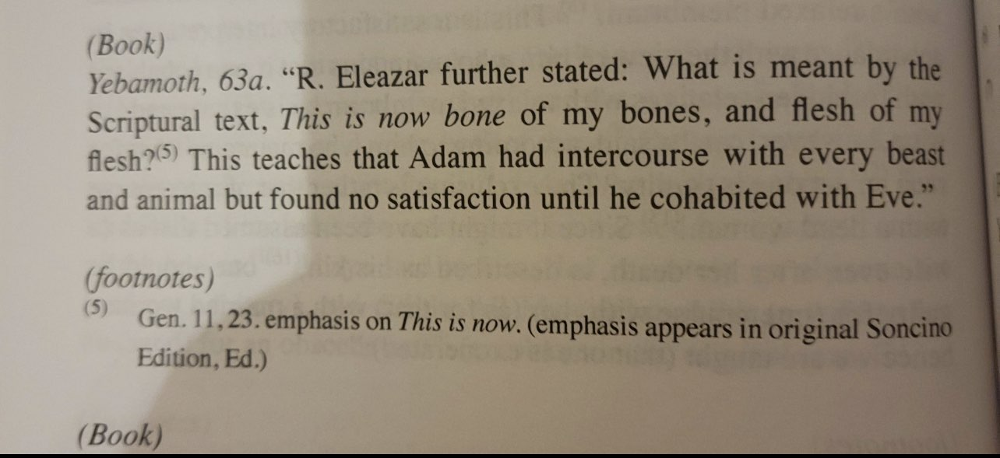

https://m.youtube.com/watch?v=QuenTrm6f94
YouTube
Abū Isrā'īl
Rabbis ADMIT the Torah can be ABROGATED!
——
Examples of Abrogation in the Judaism
👇
Example #1 (God took away someone’s priesthood):
“The Lord said to Moses, ‘Phinehas son of Eleazar, the son of Aaron, the priest, has turned my anger away from the Israelites. Since he was as zealous for my honor among them as I am, I did not put an end to them in my zeal. Therefore tell him I am making my covenant of peace with him. He and his descendants will have a covenant of a lasting priesthood, because he was zealous for the honor of his God and made atonement for the Israelites.’”
(Numbers 25:10-13)
“Therefore the Lord, the God of Israel, declares: ‘I promised that members of your family would minister before me forever. But now the Lord declares: ‘Far be it from me! Those who honor me I will honor, but those who despise me will be disdained. The time is coming when I will cut short your strength and the strength of your priestly house, so that no one in it will reach old age, and you will see distress in my dwelling. Although good will be done to Israel, no one in your family line will ever reach old age. Every one of you that I do not cut off from serving at my altar I will spare only to destroy your sight and sap your strength, and all your descendants will die in the prime of life.’”
(1 Samuel 2:30-33)
——
Example #2 (God will make a new covenant with the Jews after they broke the old one):
Then God said to Abraham, “As for you, you must keep my covenant, you and your descendants after you for the generations to come.
(Genesis 17:9)
“‘The days are coming,’ declares the Lord, ‘when I will make a new covenant with the people of Israel and with the people of Judah. It will not be like the covenant I made with their ancestors when I took them by the hand to lead them out of Egypt, because they broke my covenant though I was a husband to them,’ declares the Lord.”
(Jeremiah 31:31-32)
——
Example #3 (Adam committed beastiality before the Torah was revealed and was not punished by God for it)

“Anyone who has sexual relations with an animal is to be put to death.”
(Exodus 22:19)
“ ‘Do not have sexual relations with an animal and defile yourself with it. A woman must not present herself to an animal to have sexual relations with it; that is a perversion.”
(Leviticus 18:23)
“If a man has sexual relations with an animal, he is to be put to death, and you must kill the animal. If a woman approaches an animal to have sexual relations with it, kill both the woman and the animal. They are to be put to death; their blood will be on their own heads.”
(Leviticus 20:15-16)
“Cursed is anyone who has sexual relations with any animal.”
Then all the people shall say, “Amen!”
(Deuteronomy 27:21)
Example 4 (Jacob had two wives that were sisters of each other before the Torah was revealed and God didn’t punish Jacob for it)
“’Do not take your wife’s sister as a rival wife and have sexual relations with her while your wife is living.”
(Leviticus 18:18)